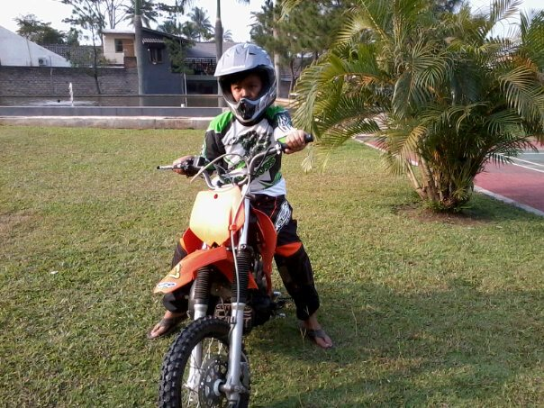

About Me
Nama : Shaddam Ghazi Aiman Fawwaz
Kelas : XI-3
Tanggal Lahir : Sukabumi, 30 Juni 2001
Hobbi : Futsal, Playing Guitar
Alamat : Jl. Pasundan No. 71 RT02/07 Kel. Nyomplong Kec. Warudoyong Kota Sukabumi
Cita - Cita : Menjadi Manager Persib Bandung
Motto : All We Need Is Love
My Hobbies
MotoCross
MotoCross mengajarkan saya bahwa jika ingin bawa motor, harus seimbang. Playing Guitar
Bagi hidup saya, gitar adalah sebuah alat musik petik yang terbuat dari kayu dan memiliki 6 senar
PersibKu
"Jayalah Persibku"
"Merah Daraku, Putih Tulangku, Biru Persibku.
"Dihina tak Tumbang, Dipuji tak Terbang.
"
Contact
No Telepon : 085720104009
Instagram
Facebook
Email : shaddamghazyy@gmail.com